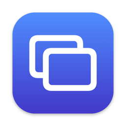
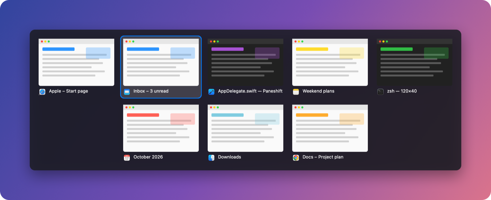

Windows-style Alt-Tab for Mac. ⌘ Tab between every window, with live previews, in an app that weighs almost nothing.
14 days free · macOS 14 or later · Apple Silicon and Intel

Each window gets its own tile, including minimized ones, so you jump straight to the one you want.
See what's in each window before you switch. Previews appear together, without flicker.
About 10 MB of memory while idle and no CPU use until you press ⌘ Tab.
Tab, Shift+Tab or the arrow keys to move; point at a tile to select it; release ⌘ to switch.
Click the ✕ or press ⌘ W to close a window, ⌘ Q to quit its app. Closing an app's last window quits it too, like on Windows; you can turn that off.
Apps still running without a window get their own tile, so you can reopen or quit them in one keystroke.
Tiles shrink to fit, then the grid scrolls and follows your selection.
Previews stay in memory while the switcher is open. Nothing is saved or sent anywhere.
macOS 14 Sonoma or later, on Apple Silicon and Intel Macs.
Accessibility lets Paneshift catch ⌘ Tab and bring the window you pick to the front. Screen Recording is only used to draw the window previews; the snapshots stay in memory and are never saved or uploaded. You can skip it and use app icons instead.
Any time: untick "Windows-style Cmd+Tab" in Paneshift's menu-bar menu, or quit Paneshift. macOS's own switcher returns immediately.
⌘ Tab goes back to the macOS default until you enter a license key. Your settings are kept.
Only to check your license key with Lemon Squeezy, our payment provider: once when you enter it and about once a week after that. Being offline never locks you out.
Open an issue on GitHub.